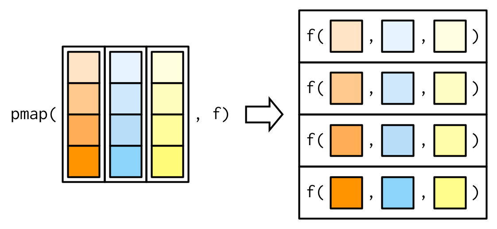

Iteration
We’ve done good!
Our wrapper
Our Reading Function
read_buoy <- function(a_year, buoy_number = 44013,
buoy_dir = "./data/buoydata/"){
#make a file name
buoy_file <- str_c(buoy_dir, buoy_number, "_", a_year, ".csv")
#read in the file
one_buoy <- read_csv(buoy_file,
na = c("99", "999",
"99.00", "9999.00",
"99.0", "9999.0",
"999.0"))
#return the file
return(one_buoy)
}Our Formatting Function
With lots of subfunctions
#bad names
fix_year_names <- function(a_buoy_df){
names(a_buoy_df) <- names(a_buoy_df) %>%
str_replace("^YY$", "YYYY") %>%
str_replace("X\\.YY", "YYYY")
return(a_buoy_df)
}Our monthly summarize
make_monthly_buoy <- function(a_buoy_df){
buoydata <- a_buoy_df %>%
select(YYYY, MM, WVHT, WTMP) %>%
rename(Year = YYYY,
Month = MM,
Wave_Height = WVHT,
Temperature_c = WTMP) %>%
group_by(Year, Month) %>%
summarise(Wave_Height = mean(Wave_Height, na.rm=T),
Temperature_c = mean(Temperature_c, na.rm=T)) %>%
ungroup()
return(buoydata)
}Reading in a file of functions
Often, we want to have a file with just all of our functions, so we don’t junk up our working file. This eventually extends to writing packages, but, that’s another class…
This works great for one year!
# A tibble: 7 × 4
Year Month Wave_Height Temperature_c
<dbl> <dbl> <dbl> <dbl>
1 2012 6 0.52 18.2
2 2012 7 0.407 20.1
3 2012 8 0.393 20.4
4 2012 9 0.768 16.4
5 2012 10 0.890 13.7
6 2012 11 1.17 10.7
7 2012 12 1.23 8.74But what if we want…
You can load one year, but…

How do we get to there from here?
One solution:
NO!
Isn’t this what computers/robots are all about?

The old school way
The Map Paradigm


Map functions
Take a list or vector as input
Apply a function to each elment of the list/vector
Return the corresponding object, bound together into a prespecified type
Median Example
Median Example
$a
[1] 0.04465925
$b
[1] 0.4002244
$c
[1] 0.06169437
$d
[1] 2.468612e-05The Map Paradigm
## What purrr::map is
doing 
What if I don’t want a list

The world of maps
map()makes a list.map_df()makes a tibble/data frame.map_lgl()makes a logical vector.map_int()makes an integer vector.map_dbl()makes a double vector.map_chr()makes a character vector.
More medians
a b c d
4.465925e-02 4.002244e-01 6.169437e-02 2.468612e-05 a b c d
"0.044659" "0.400224" "0.061694" "0.000025" # A tibble: 1 × 4
a b c d
<dbl> <dbl> <dbl> <dbl>
1 0.0447 0.400 0.0617 0.0000247What if I have more than one argument?
a b c d
4.465925e-02 4.002244e-01 6.169437e-02 2.468612e-05 purrr:::map with arguments

What if I have more than one argument?
We can also use ~ and a . as a placeholder:
a b c d
4.465925e-02 4.002244e-01 6.169437e-02 2.468612e-05 You try!
What does
map(-2:2, rnorm, n = 5)do? How is it different frommap_dbl(-2:2, rnorm, n = 5)?Get the mean of each column of
dfCompute the number of unique values in each column of
iris(hint, you’ll need length and unique)!
Now, what about our data problem?
We have a lot of years
These years can be put into a vector - 1986:2013, so….
Your turn again!
Make one big tibble using
map_df(), a vector of years, andget_buoyGet the annual mean of wave height
Plot!
One Line to rule them all
# A tibble: 331 × 4
Year Month Wave_Height Temperature_c
<dbl> <dbl> <dbl> <dbl>
1 1986 1 NaN 3.62
2 1986 2 NaN 2.68
3 1986 3 NaN 3.04
4 1986 4 NaN 6.42
5 1986 5 NaN 10.5
6 1986 6 0.470 13.7
7 1986 7 0.401 17.1
8 1986 8 0.517 18.1
9 1986 9 0.487 14.9
10 1986 10 0.683 12.8
# ℹ 321 more rowsA Standard Workflow
Our Plot

Variations on a purrr
- If we want map to do something, but not return an
output, use
purrr::walk().
- If we have 2 lists,
map2().
- If we have n lists,
pmap()!
Walk is invisible
Walk is invisible

Iterate through two things with map2
[1] 12 14 16 18 20 22 24 26 28 30Iterate through two things with map2

Iterate through many things with pmap
[1] 113 116 119 122 125 128 131 134 137 140Iterate through many things with pmap

Final Exercises
Write a function that given a year will give you the mean temperature from a buoy. Then use
walk()andcat()(withget_buoy()) to print out the mean temperatures for every file.
Use
map2_chr(),pasteorstr_c(), and the outputget_buoy(2002)’s Year and Month Columns (as arguments to map2) to make a character vector of dates in the format “Month-1-Year” using 1 to represent the first day of the month. Yes, you could do this via dplyr, but let’s play withmap2()to make sure you get it.